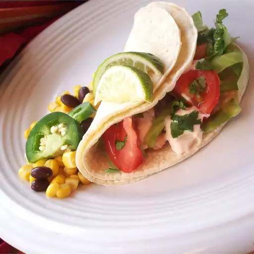

Tacos

Description
These grilled fish tacos are made with marinated fish fillets and topped with a spicy chipotle-lime dressing. Choose toppings to suit your taste, or include typical accompaniments such as salsa fresca, cabbage, a squeeze of lime juice, and chopped cilantro.
Ingredients
- Marinated fish
- Dressing
- Assembly
Steps
- Prepare marinated fish: Whisk olive oil, vinegar, lime juice, lime zest, garlic, honey, seafood seasoning, hot pepper sauce, cumin, chili powder, and black pepper together in a bowl until blended. Place tilapia in a shallow dish and pour the marinade over the fish; cover the dish with plastic wrap and refrigerate for 6 to 8 hours.
- Make the dressing: Combine sour cream and adobo sauce in a bowl. Stir in lime juice, lime zest, seafood seasoning, cumin, and chili powder. Add salt and pepper to taste. Cover and refrigerate until needed.
- Preheat an outdoor grill for high heat and lightly oil the grate. Set the grate 4 inches from the heat.
- Remove fish from the marinade, drain off any excess and discard the marinade. Grill fish pieces until easily flaked with a fork, turning once, about 9 minutes.
- Assemble tacos: Place fish pieces in the center of tortillas with desired amounts of tomatoes, cabbage, and cilantro; drizzle with dressing.
- To serve, roll up tortillas around fillings, and garnish with lime wedges.